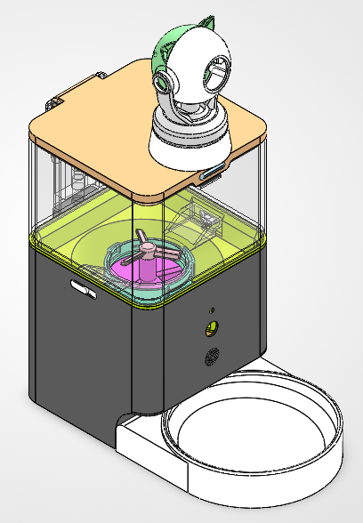

PERSONAL PROJECT ARCHIVE / 2026
让投喂、观察
成为一个系统。
我是 Hean-zky。这是一个从 SolidWorks 模型走向实物样机的猫粮投喂器项目档案，记录结构、传动与猫咪观察功能如何被放进同一个桌面设备。
- 类型
- 机械 / 智能硬件
- 模型
- SolidWorks 2026 + STEP
- 状态
- ● 实物已装配
 01 / 08 · PROTOTYPE
01 / 08 · PROTOTYPE
Feeder / prototype观察 · 储粮 · 投喂
01 / PROJECT
猫粮投喂器
一台把定时投喂、机械下料和远程观察放在一起的家用设备。先看它如何存在于真实空间，再回到模型里理解每一个动作。

02 / MECHANISM
一次投喂，
五个动作。
到达设定时间后，控制系统发出约 5 秒的电信号。电机、带轮、蜗杆与齿轮把电信号变成一次可重复的下料动作。
- 01电机启动
喂食时间到达，电机获得约 5 秒工作信号。
- 02两级带轮传动
一级带轮与二级带轮依次传递动力。
- 03蜗杆减速
1 头蜗杆带动齿轮转过设定角度。
- 04拨片联动
齿轮、拨片和拨粮器同步转动，推动猫粮进入粮道。
- 05完成下料
猫粮沿粮道滑入喂食碗，电机停止。
03 / FIELD NOTES
实物记录
拆开外壳，传动件、喂食组件和摄像头分别承担不同的任务。点击图片可以放大查看细节。
OBSERVATION MODULE
看见猫咪，
也看见它的日常。
顶部摄像头支持约 355° 水平旋转与最高 150° 上下转动，可识别猫咪活动、自动捕捉行为，并按间隔截取图片上传至用户端。
355° / 150°04 / ARCHIVE
模型档案
STEP 文件与图片展示集中在当前仓库；SolidWorks 2026 源文件单独维护，便于区分可编辑模型与通用交换格式。
05 / ABOUT
Hean-zky
一个持续把想法变成结构、把结构变成实物的人。这个页面是项目的入口，模型、照片和说明会随着设计迭代继续更新。
访问 GitHub ↗